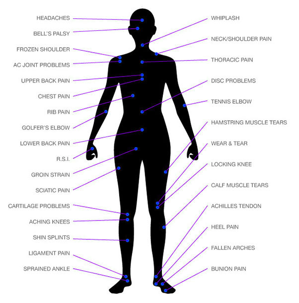
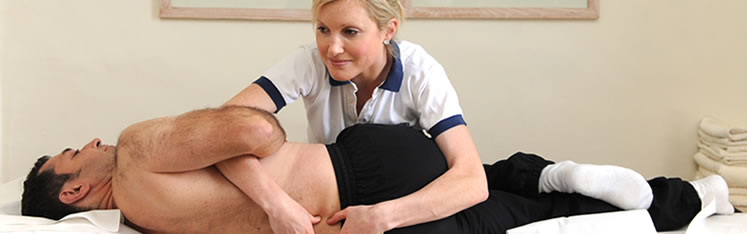
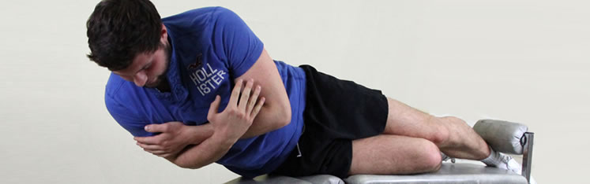
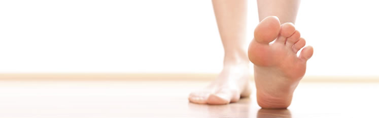
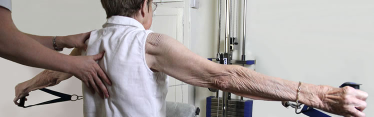
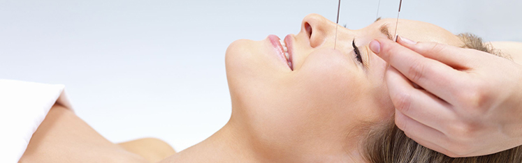

Our Treatments and Services
We are particularly aware of the advantages of immediate treatment and of minimising the post injury inactive period. Manual therapy plus effective full rehabilitation exercise programmes, with an emphasis on reintegration back to full activity, can help prevent recurrence of the same and similar problems.
After taking a detailed history, a thorough musculoskeletal assessment is carried out to identify the exact nature and extent of the injury. Any underlying biomechanical problems that may be contributing to the problem are identified e.g. posture, feet, improper sports technique.
Our full range of physiotherapy services are supplemented by special equipment and methods for the treatment of pain and injuries. Below shows a small example of parts of the body we treat:
Massage Therapy
This is a carefully graded system for reducing pain and restoring normal movement to the joints, soft-tissues and nervous system. The system includes stretching, slow movements such as mobilisation and quick movements such as manipulation.
Sports Injury Rehabilitation
Exercises are specifically designed for each individual and injuries are rehabilitated from beginner to advanced. You are under careful supervision of a Chartered Physiotherapist in our fully equipped gymnasium, and are carefully monitored so you can feel safe and secure in gaining fitness to return to work, normal activities and your level of sport. We cater for athletes up to Olympic level. We have incorporated Rehabilitation Pilates into our facilities to complement our existing services. A maximum of four participants per class allows for a high level of care and individual feedback. The classes are taught by a Chartered Physiotherapist.
Home exercises are scientifically designed to help your posture, improve the mobility of your spine and joints, and stabilise and strengthen the muscles that support your bones. We have been using the Norwegian system of medical exercise therapy for the past 25 years.
Orthotics
Painful feet, knees, hips & back are often caused by a biomechanical problem i.e. the shape of your hips, knees and feet. We can fully assess your foot problems and may prescribe orthotics (custom-made devices which balance your feet and allow you to walk in as close to a neutral position as possible, reducing the rotational stresses from your feet to your back.)
Childrens Feet: Emma Jones has specialised in Paediatric Biomechanics in children (in-toeing, out-toeing, flat feet). A careful assessment of the child is carried out and prescriptions made as to the development requirements of the child.
Ergonomics
By assessing the work station environment we can identify, treat and prevent problems caused by improper desk arrangement (repetitive strain injury, back, neck, and upper limb disorders.)
Osteoporosis
It is scientifically proven that exercise can maintain and restore bone density. We design safe and effective strength training programmes for people with osteoporosis, in combination with an overall programme of advice and management.
Acupuncture & Dry Needling
At Patrick Farrell Physiotherapy Acupuncture we use Traditional Chinese Medicine and acupuncture to tackle a wide variety of diseases. We believe that we can apply this ancient wisdom to treat almost any condition that presents itself. As Traditional Chinese Medicine differs so much in its approach to western medicine we have supplied a list of the most common acupuncture treatments below with their western bio-medical names. If your condition is not listed below please contact Niall for more information and he will be happy to provide it.
Dry needling is the use of either solid filiform needles or hollow-core hypodermic needles for therapy of muscle pain, sometimes also known as intramuscular stimulation (IMS). Acupuncture and dry needling techniques are similar.
Pricing
| Service | Price |
|---|---|
| Physiotherapy New assessment | €75 |
| Physiotherapy follow-up appointment | €50 |
| Acupuncture/Dry Needling session | €50 |
| Orthotic assessment | €75 |
| Orthotic insoles, custom-made | €250 (approx) |
| Fitting Session | €25 |
| Temporary Orthotics | €50-€65 |
| Biomechanical Screening | €120 (approx) |
| Rehabilation Programs | from €150 |
| Ergonomic Consultation | €45 |